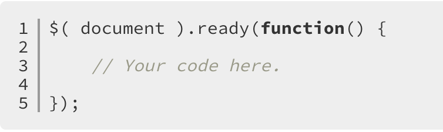

Rather than going to deep into jQuery what we want to achive is to present a quick overview of we can do. If in the future you need to develop an application that uses the library, try first at<learn jQuery, and/or at the API jQuery
jQuery is just a JavaScript library. All the power of jQuery is accessed via JavaScript. But first things first. In order to access the library you will need to add a script tag to your HTML head tag. Click on the link below to go download jQuery.
Compressed and uncompressed copies of jQuery files are available. The uncompressed file is best used during development or debugging; the compressed file saves bandwidth and improves performance in production.
The src attribute in the script element must point to a copy of jQuery. Download a copy of jQuery from the Downloading jQuery page and store the jquery.js file in the same directory as your HTML file.
Go to the jQuery Download!If you decide not to go this route you can always use the widely use CDN, where CDN stands for content delivery network or content distribution network.
Once you have your downloaded copy in the appropriate directory add a script to the head tag as above.
As a first demonstration we will add an empty div to add content using jQuery.
To ensure that their code runs after the browser finishes loading the document, jQuery has a statement known as the ready event
To use callbacks, it is important to know how to pass them into their parent function. We can link Callback without Arguments or Callback with Arguments